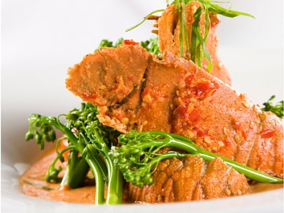

Lobster and Shiitake Ragu Recipes:
A Match Made in Heaven

If you've ever had lobster, you know that it's delicious on its own. But Shiitake Ragu can make your lobster even more palatable. We're going to teach you how to make the perfect lobster with Shiitake Ragu, starting with the ingredients.
Ingredient List
- 2 lobsters
- 2 tablespoons of extra virgin olive oil
- 1/4 cup of shallots
- 3 garlic cloves
- 10 (large) shiitake mushrooms
- 1/4 cup of chopped and peeled celery root
- 1 medium carrot
- 1 rib celery
- 2 cups Brussels sprouts
- 1/4 cup of wine
- 1/4 cup of lobster stock
- 1 sage leaf
- 1 medium tomato
- 1/4 cup speck
- 4 tablespoons of butter
- 2 tablespoons chives
- 2 tablespoons parsley
- Radish sprouts
- Celery root
6 Easy Lobster and Shiitake Ragu Cooking Instructions
- Bring a large pot of water to a boil, and add in your lobsters. Once completed, usually in six minutes; remove lobsters from the water, and remove the meat. You'll need to remove the tails and claw meat.
NOTE: Remember to save the shells and body.
- Add oil to a large skillet on medium heat, and add in your shallots and garlic. You would want to cook until they're translucent, and then add in the mushrooms, celery root, celery and carrots. Continue cooking until everything is tender, or for approximately 10 minutes.
- And Brussels sprouts into the mix, and cook until they are caramelized.
- Add in your Madeira, lobster stock, tomatoes and sage. Next, reduce the heat, and simmer for 8 to 10 minutes, or until thick. Now, add in your butter, and cook until it is melted.
- And your lobster meat into the skillet and cover. Cook for approximately 8 to 10 minutes, but do not boil.
- Remove the skillet and sprinkle the lobster mixture with olive oil, chives and parsley.
The final step is to place the celery root into a food processor or blender, and blend until it is puréed. You'll be adding this to your plate followed by the meat and lobster mixture that you made. Garnish with the radish sprouts, and serve to your guests.